A master list of implements for implements for homemade repair and maintenance.
Oh, sure. In theory, it's possible to have too many tools. In actual practice, though, the art of acquiring implements-just like every motion other than that of antimatter-holds to Einstein's theory of special relativity. The mass of an object may appear to approach infinite as it nears the speed of light, just as someone may perceive that we have too many tools. But that's from an outside frame of reference. On board the speeding spaceship or inside the packed workshop, the situation looks copacetic.
Take our word for it: Don't listen to those naysayers. Worry, instead, about having enough tools, and get to work right away on achieving that goal!
To help you get off to a good start, we polled MOTHER'S staff-a group with considerable experience at the art of tool accumulation-for a list of 25 essential implements for homestead repair and maintenance. Initially, there was much grousing over the limitation. "What, a mere 25? Why, that won't even cover toaster repair." Eventually, though, the unruly and opinionated bunch fell into line and cast their votes. The final tally includes only those tools that received at least three votes on a total of 14 ballots.
Experienced tinkerers are probably familiar with most, if not all, of the tools on our list, but we hope you veterans will find at least a couple of inspirational new uses for your favorites when we discuss tool applications. And if you really are just starting a tool obsession (er, collection), you'll be surprised at how many jobs a few good tools can do.
One all-too-common misconception about tools is that the home mechanic can get by with inferior items because he or she won't use them often. Well, besides the often overlooked fact that good tools can help compensate for unskilled hands, there's another important reason to buy on the upper half of the price scale. Because your collection will be limited, at least for the time being, you'll sometimes be asking your tools to do work they weren't designed for. In fact, in the course of this article we're likely to suggest some uses that will make manufacturers shudder. They would call it abuse; we call it versatility. Whatever the terminology, it takes a tough tool to handle the strain.
There are really only three ways to estimate a tool's quality. First, inspect it for finish. Most good tools have been cleanly cast, with any remaining rough edges ground and polished. Next, if the tool has action-pliers pivot, a drill spins-operate it to see if it moves smoothly. Finally, look at the price tag. If it costs more than a tool with equivalent features, the difference probably indicates superior quality instead of (or in addition to) added markup.
1. Safety glasses
Just about everyone agrees that it's a good idea to wear safety glasses when working with tools; far fewer actually do it. Please make it a habit. Uses: protecting two irreplaceable tools.
2. Screwdrivers
You need a minimum of two sizes each of flatheaded and Phillips. One good approach is to buy a driver with switchable heads; the kind that stores bits in the handle works well because you always have the right bit with you. Bits or blades with flat, rather than round, shanks can be twisted with a wrench. Quality is very important in this tool. Cheap screwdrivers quickly become useless. Uses: Though screwdrivers can be used to do work other than installing and removing screws, given the best don't last long under such duty.
3. Hammer
For all-around use, choose a 16- to 20-ounce, rip-claw (flat-tanged) hammer with a smooth face. Only a steel or fiberglass handle will stand up to serious nail pulling. Uses: To hammer materials other than hardened steel; to drive and pull nails; as a crowbar; as a crude chisel on wood; as a lever; to remove bottle caps.
4. Locking Pliers
Often referred to by a brand name, Vise-Grip Locking Pliers. Look for a 10" pair with curved jaws.
Uses: Superior as pliers, because they don't slip; removing bolts, nuts or even screws; pulling nails with heads partly revealed; locking shafts to remove nuts; as a pipe wrench; as a clamp to secure materials to each other or to a bench; bending, crimping, or squeezing metal or other flexible material; removing bottle caps; serving as an emergency replacement for broken control levers.
5. Tape measure
If you're going to own only one, make it a 25 footer with a 1"-wide tape. Look for a case that's an even number of inches front to back, so there's a convenient number to add for inside measurements. The 1"-wide tape is rigid enough to extend straight out without an assistant to hold it. Thus you can measure horizontal distance by yourself and check vertical distance by bending the tape at the corner and reading the inside.
Uses: Mostly self-evident, but a 1"-wide tape also makes a tolerable straightedge, can be used to hook, and drag a tool lying just out of reach, and will serve as a crude plumb bob.
6. Shovel
Now here's a tool that's hard to get a consensus on. For one thing, what do you call all those different shapes of shovels? There's the standard digging shovel-rounded blade at an angle to the long straight handle. And the digging spade squared blade nearly in line with the shorter D-handle. And the coal shovel-no good for digging, with its broad blade with angled sides and short D-handle, but great for heaving quantities of loose material.
Uses: Use a standard digging shovel for general digging and shoveling loose material. Use a spade for digging where aclean, straight edge is necessary. If you don't plan on digging much, but will be moving gravel and shoveling snow,consider a coal shovel.
7. Utility knife
The type with the stout, triangular blade. Blades that retract into the handle are much safer to carry and store but aren't as secure in use as fixed blades. If you use a retractable knife, be sure the handle screw is tight at all times. Should the razorsharp blade slip through the joint in the case, you could be badly cut.
Uses: Cut drywall; cut asphalt shingles (from the back); cut paneling; cut fiberglass insulation; cut roofing felt, polyethylene, wallpaper and veneer; scribe along a line before cutting with a saw to get a smooth edge; trim molding; sharpen your pencil; clean your fingernails (carefully!); open packages.
8. Six-foot stepladder
That which is just out of reach on your tiptoes can often be done with ease from a ladder. A six-footer works well inside the house, and it enables a person of average height to reach gutters and low tree limbs that need trimming.
Uses: Besides the obvious, try spanning from a stairway tread to a rung on your ladder with a board to form a scaffold; use the top rung to support apiece of dry wall you're trying to get to the ceiling.
9. Four-in-hand file
Often called a horse rasp, after one version of the tool. Look for an 8"- to 10"long item about 1 1/8" wide. One side should be half-round and the other flat. Most designs include round and flat rasps and medium flat file surfaces.
Uses: Reshaping, reducing or removing sharp edges from any common material other than glass.
10. Needle-nose pliers
For yeoman duty, pick out an 8" pair that has a wire cutter and maybe even a stripper. Insulated handles are nice for cold days and for electrical work.
Uses: Remove and install small nuts and bolts; cut, strip, form and twist small- to medium-gauge wires; insert small parts in hardto-reach spots; remove cotter pins, locking tabs and inside snap rings; pull splinters.
11. Three-eighths-inch variable speed, reversible drill
Look for a drill with at least a 4.5-amp motor, a long cord and, if possible, roller or ball bearings. Pick up a set of high-speed bits spanning from 1/32" to 4" in 1/3 ;2" increments, 1/4" to 1" spade bits in 1/8" increments, a couple of Phillips-head screwdriver bits, and maybe even a magnetic hexhead driver for sheet metal screws.
Uses: Drill holes; use a Phillips bit to insert and remove screws; install a rotary rasp for grinding, a sanding drum for sanding, a buffer for polishing even a paint stirrer for mixing.
12. Hacksaw
There's no comparably inexpensive substitute when it comes to cutting metal. Check to see that the handle adjusts blade tension easily and prevents the blade from twisting. Blades with 18 teeth per inch work fine for most work, though a carbide rod comes in handy for very hard materials.
Uses: Cutting metal, glass or ceramic.
13. Adjustable wrench
A good 10" adjustable wrench will do a reasonable imitation of a set of open-end wrenches. The jaws should open to about 1 1/8" and should be tight even at full extension.
Uses: Remove nuts and bolts (increase leverage with a length of pipe over the handle); bend steel by cinching the jaws down on the material; turn a screwdriver by tightening the wrench's jaws on its shaft.
14. Chisels
Unless you plan to get into detailed woodworking, you don't need a full set of chisels. One-half-inch and 1" butt chisels with beveled blades will handle most jobs. Since you'll often be using them to "hog out" wood in a comparatively crude fashion, stout handles that can tolerate pounding with your hammer are important.
Uses: Since a chisel looks so much like a screwdriver, you may be tempted to use it for such abusive tasks as prying things apart. Don't. It won't do the job it's supposed to when the edge is dull, and it's too hard to sharpen to justify a moment's expediency. Watch out for nails, too.
15. Circular saw
The standard size carries a 7 1/4"-diameter blade and should have at least a 10-amp motor. Ball or roller bearings are preferable to sleeve bearings. If it doesn't come with a carbide-tooth combination blade, buy one immediately. The carbide costs twice as much and lasts four times as long as a high-speed steel blade-especially if you occasionally use it on nails.
Uses: With the proper blade, it will cut wood, plastic, plywood, aluminum, iron, steel, masonry, ceramic and just about anything else you'll encounter; for spots you can't quite reach, carry a keyhole saw.
16. Wrecking bar
Really a variant on the time-honored crowbar, this curved piece of flat steel bar is better suited than its ancestor to removing materials without damaging them, and it also does a fine job of pulling nails without marring a surface.
Uses: Pry; lever; pull nails; lift edges of molding, trim and sheet materials; chisel; lift bottom of heavy object to get supports or hands underneath.
17. Linesman's pliers
Originally intended for heavy electrical and phone wire work, these square-jawed pliers are homestead workhorses. Buy the highest-quality 8" set you can find.
Uses: Crimping, cutting, twisting or stripping medium- to heavy-gauge wire; removing bolts or nuts; flattening or bending metal; pulling nails; pulling and flattening cotter pins.
18. Combination square
The 12" sliding square-offering 45° and 90° angles, an accurate steel rule and a built-in bubble level-is a standard for basic carpentry.
Uses: Squaring corners; marking miter and square saw cuts; measuring accurately; leveling everything from pictures to fence rails; scribing a saw cut parallel to an edge (slide the square along with the pencil at its tip); setting circular-saw cut depth or other uses as a depth gauge.
19. Pump pliers
Often called arced, slipjoint or groove-joint pliers, or referred to by the brand name Channel Lock, this tool is most useful when it's big. Spring for the 16" size.
Uses: Anything big that requires major leverage and can stand to be marred by the jaws; great for basin nuts; works as a pipe wrench; the only tool for removing wheelbearing rut covers; removing bottle caps; even working on a pump.
20. Extension ladder
A must for do-ityourselfers who have two-story houses. The 24' size reaches all but the steepest gable ends. Aluminum is lighter than wood and very durable. Fiberglass is best, because it's nonconductive, but is very expensive.
Uses: Besides reaching where you otherwise couldn't, suspend it between two sawhorses, add some planks, and you've got a scaffold.
21. C-clamps
For general duty, pick out a pair of 8" clamps. You may find them so helpful that you'll eventually want to get other sizes as well.
Uses: Clamping materials together for gluing, sawing, drilling, etc.; clamping material to a bench to act as a vise; clamping straightedges to material for straight cuts with the circular saw; clamping boards in place temporarily for nailing or screwing; holding together a broken part for temporary duty.
22. Maul
With one side configured as a splitting ax and the other as a sledge hammer, you get double duty. The 8-pound size works well for most people on most jobs.
Uses: Wood splitting; cutting tree roots; tearing out walls; pounding in fence posts, stakes or even splitting wedges; the last word in the "bigger hammer" theory.
23. Bow saw
A tubular steel or aluminum bow that holds a replaceable crosscut saw blade. For most situations, a 36" model works well.
Uses: Pruning; limited firewood cutting; sawing timbers or even boards.
24. Nut drivers
These look like screwdriver handles but have hexhead sockets on the end. There are manv sizes, but 1/4", 3/8"and 7/16" are the most common. Steer clear of the removable socket version unless you never lose things. Colorcoded handles are convenient.
Uses: Reach deep into appliances to remove nuts you couldn't touch with a wrench or pliers; much more convenient than a socket and ratchet for small repairs.
25. Posthole digger
You may not need it often, but when the time comes, it sure beats a shovel.
Uses: Digging small, deep holes for fence posts, post footings, etc.
|
|
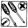 |
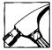 |
|
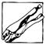 |
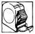 |
|
|
|
|
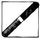 |
|
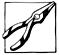 |
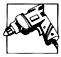 |
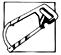 |
|
|
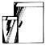 |
|
|
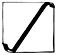 |
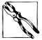 |
|
|
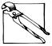 |
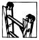 |
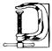 |
|
|
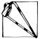 |
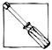 |